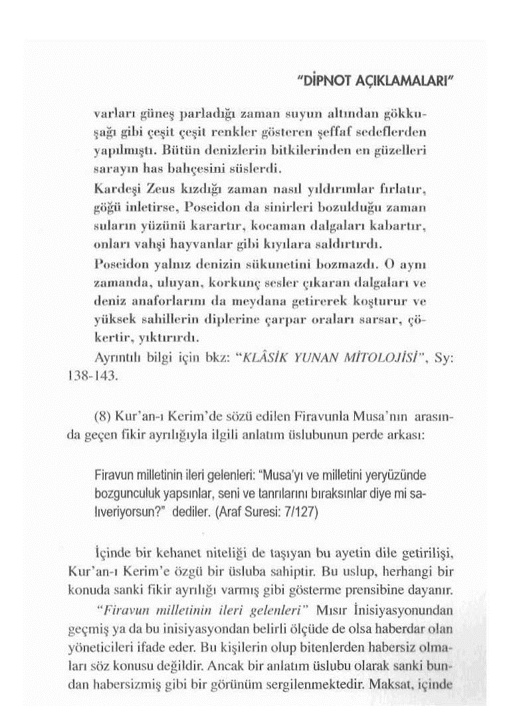
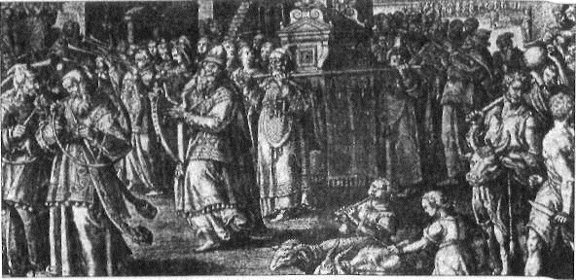
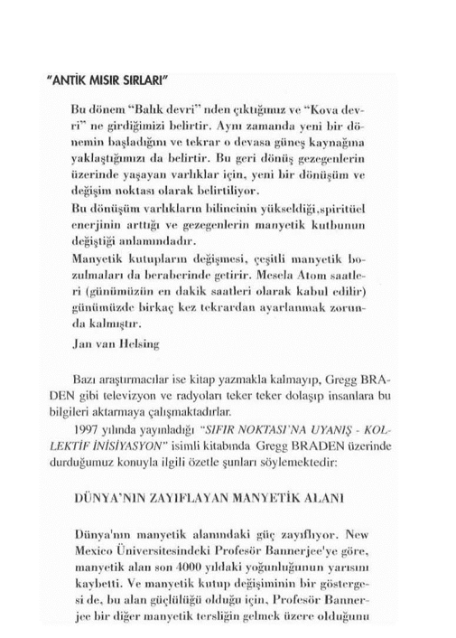
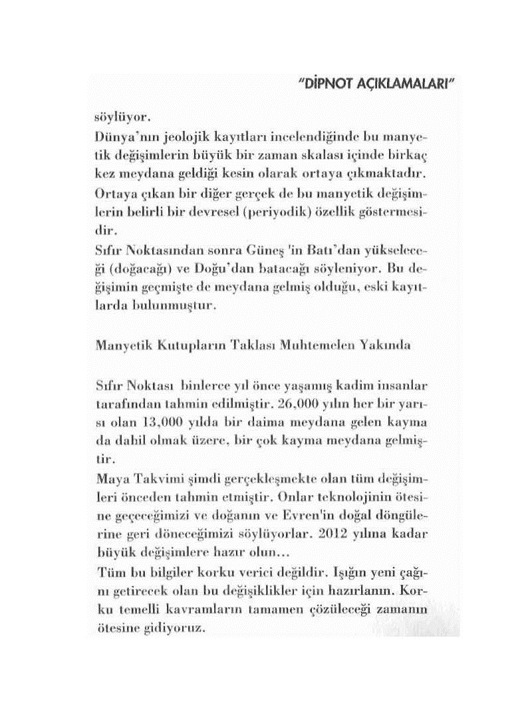
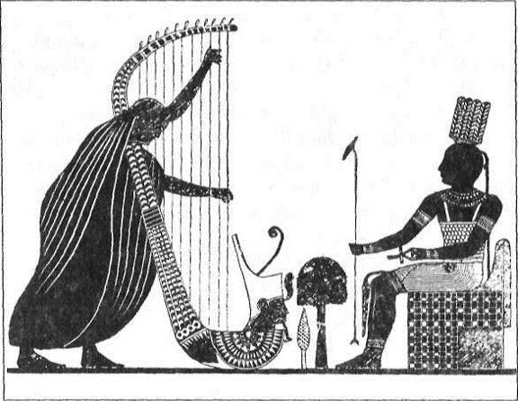
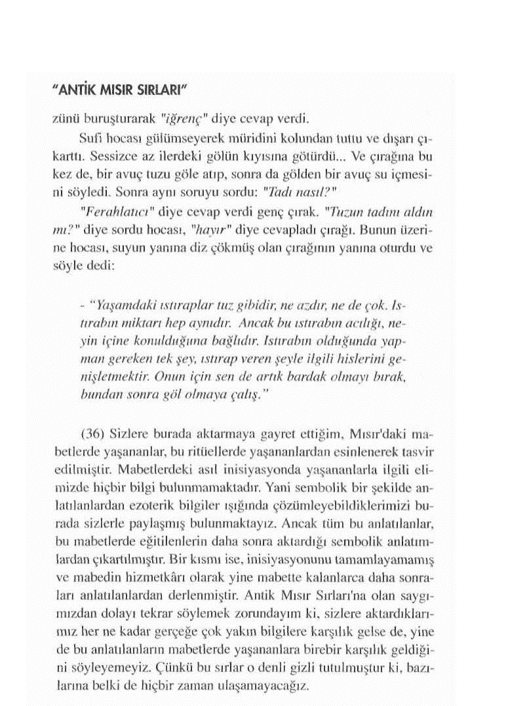
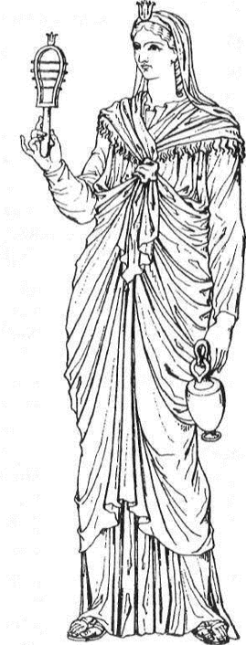

Antik Mısır Sırlan'nı konu edindiğimiz bu kitabımızda Mısır'da yetişen inisiyelerden de örnekler vermek zaten gerekliydi ve biz de öyle yaptık. Ancak Mısır İnisiyeleri ile ilgili bir bölüm yapmamızın bir diğer nedeni de, bu inisiyatik bilgilerin dünya üzerinde ne denli zorluklarla karşılaşmış olduğunu bir kez daha sizlere hatırlatmak içindi...
Mısır'da yetişen inisiyeler kuşkusuz ki verdiğimiz bu üç örnekle kısıtlı değildir. Bu kişiler, sadece birer örnek olması bakmımından ele alınmalıdır... Bu birkaç örneğimizden de çok kolaylıkla anlaşılacağı gibi inisiyasyona ait bilgiler, Tufan sonrasında birtakım güçler tarafından her çağda büyük bir baskıya manız kalmıştır. Bu baskılar ilk olarak Mısır'daki İskenderiye Kitaplığı'nın yakılışı ve Mısırlı rahiplerin katledilmesi ile kendisini göstermiş, sonra da bu merkezlerde yetişen kişiler gittikleri ülkelerinde büyük baskılara maruz kalmışlardır. Yani ezoterik bilgiler. Demir Çağ'ın hemen her döneminde bilinen ve bilinmeyen karanlık güçlerce hep aşağılanmış, baskıya maruz bırakılmış hatta bunlarla da yetinilmeyerek, bu öğretileri savunanlar bizzat bu güçlerce acımasızca katledilmişlerdir. Bu konuya özellikle dikkatlerinizi çekmek istiyorum.
Evet, şunu asla unutmayın: Ezoterik bilgi birikimi bir takım karanlık güçlerce hep yokedilmek ve bu bilgilerin halka yansıması hep engellenmek istenmiştir. Bu yolda sadece inisiyeler, mürşitler, filozoflar, rahipler değil, paygamberler bile katledilebilıniştir. Bu konu son derece önemlidir... Ve bu konu günümüzde de geçerlidir...
İlk kez Atlantis'teki "Bir'in Oğulları" ile "Belial'in Oğulları" arasında başlayan ve sonrasında bizim kıtalarımızda Agarta ve Şambala Rahipleri'nce sürdürülen aydınlık güçlerle karanlık güçlerin mücadelesi, Demir Çağ'da cinayet ve katliamlarla kendisini göstermiştir. İskenderiye Kitaplığının yakılışıyla bizim deveremizde etkisini hissettirmeye başlayan "Karanlık Güçler"in baskıları Örfe, Fisagor, İsa Peygamber, Hallaç-ı Mansur gibi inisiyatik ve batnıi şahsiyetlerin katledilişleriyle doruk noktasına çıkmıştır. Çinliler tarafından katledilen Tibetli rahipler ise başlı başına bir kitap konusudur...
Canları pahasına da olsa, kanlarıyla inisiyasyonun bilgeliğini geleceğe taşımış olan tüm batini düşünür, filozof ve inisiyeleri burada saygıyla anıyoruz...
Eğer bugün batınilikten, ezoterik öğretilerden ve inisiyatik sırlardan söz edebiliyorsak, onlar sayesindedir... Bu baskılar bugün de vardır, bundan sonra da olacaktır. Ta ki, gerçekler apaçık ortaya çıkıp uyanışın esintileri dünyamızı sarana dek...
Geleneksel sürünün içinde değil, dışında yaşamaya çalışan okurlarımıza sunduğumuz bu kitapla, apaçık bilgilerin ortaya çıkacağı günlere doğru bir adım daha atmış bulunuyoruz. Evet... Henüz apaçık bilgilerle konuşamıyoruz... Hâlâ sembollerin üstünü açmaya çalışıyoruz... Ama biliyoruz ki, bir gün perdesiz olarak gerçeklerle temas edebileceğiz. O günler uzak değildir!... Göreceksiniz, duyacaksınız... Başlangıçta vaadedilen o günlere doğru hızla yaklaşmaktayız. Gerçekler apaçık bir halde ortaya çıktığında "görünenin hiç de göründüğü gibi olmadığı" herkes tarafından anlaşılacaktır.
Ancak apaçık gerçeklere bakabilmek için buna gözlerimizi hazırlamamız gerekmektedir. Uzun bir süre karanlıklar içinde kalan bir göze aniden ışık verildiğinde nasıl bir sonuçla karşılaşacağı ortadadır. İşte şu an yapılmaya çalışılan, karanlıklar içinde yaşamaya alışmış gözlere perdelenmiş ışığı tutmaktan ibarettir. Işığı perdesiz bir şekilde seyredebilecek yetkinliğe gelinceye kadar, dinler, felsefeler ve mitolojiler fonksiyonlarım sürdürmeye devam edeceklerdir. Işık perdesiz olarak ortaya çıktığında ise bu müesseselere artık ihtiyaç kalmayacağı için bütün bu müesseseler fonksiyonlarını bitireceklerdir. Geleceği söylenilen Altın Çağ'da dinler devrinin kapanacağının anlamı işte budur. Bunu yüzyıllar öncesinden ifade edenler olmuştur. İslâm Dini içindeki önde gelen Batıniler'den Muhyiddin Arabi bunu tek bir cümleyle şöyle özetlemişti: "Arif için din yoktur..."
Tüm bu sözlerin ne anlama geldiği apaçık bilgilerin ortaya çıkmasıyla yakında çok daha iyi anlaşılacaktır. İşimize gelse de gelmese de, varılacak en son nokta budur. Dinlerin son nokta olarak gösterdiği kıyam etmek de budur.
Söz konusu olan bu ezoterik bilgiye göre:
Dünya nüfusu 7 Milyar olduğunda içinde bulunduğumuz devrenin biterek, yeni bir devrenin başlayacağın söylenmektedir. Dünya nüfusunun artış oranı dikkate alındığında, bu rakkama 2010 - 2014 yılları arasında ulaşılması beklenmektedir. Bu birçok kehanet ve eski uygarlıklardan günümüze kalan ezoterik bilgilerle örtüşen bir tarihtir. Ayrıca bilindiği gibi 2012 Balık Burcu Çağı'nın sona erip. Kova Burcu Çağı'nın başlayacağı bir tarihtir. Bu tarih başta Orta Amerika yerlileri olmak üzere birçok toplumun ezoterik bilgilerinde genel uyanış günlerinin yoğun olarak hissedileceği sürecin başlangıcı olarak da nitelendirilmektedir. Bunlardan hep daha önce söz etmiştik. Ancak işin ilginç yanı ruhlann sayılması ile ilgili Mısır'ın Ölüler Kitabı'nda da söz edilmesidir. Evet, son derece manider bir şekilde Mısır'ın Ölüler Kitabı'nda da ruhlann sayılmasıyla ilgili bir tema işlenmiştir Sözlerimi Mısır'ın Ölüler Kitabı'nda geçen bu konuyla ilgili bir satırla noktalamak istiyorum:
Ruhların sayıldığı gün mabette Büyük Tanrı’yı görmelerine izin ver ve oturdukları yerler gizli olanların Osiris’le konuşmalarına izin ver.
Ruhların sayıldığı gün...
Ruhlar niçin sayılsın diye düşündüğümüzde, buna klasik bir yaklaşımla, mantıklı bir cevap vermenin zorluğu ortadadır. Demek ki belli bir sayının tutup tutmadığının anlaşılması bur rada söz konusu edilmektedir. Bu sayıyla ilgili Ölüler Kitabı'nda net bir bilgi verilmemektedir ama ruhların sayılacağından açıkça bahsedilmektedir. Bu da 7 Milyarla ilgili ezoterik bilgiyi daha ilginç kılmaktadır.
(1) Ezoterik Bilgiler'de Atlantis'in son dönemlerinde iki gruba ayrıldıkları ve bu iki grubun birbirleriyle savaştığı anlatılır. Yine bu aynı bilgilerde, bu gruplardan negatif kutbu temsil edenlerin (Belial'in Oğuilan'nın) yaklaşmakta olan büyük bir doğal afetin kıtalarını yerle bir edeceğine inanmadıkları da ifade edilir. Bu ayrıntının yukarıda alıntı yaptığımız ayette de "tepelerine inecek bu gerçeği yalanladılar" cümlesiyle dile getirilmiş olduğunu görüyoruz. (Ayrıntılı bilgi için bkz: "GİZLİ SIRLAR ÖĞRETİSİ" Sy: 22-34, 244-247)
(2) Kayıp Atlantis Kıtası'nın varlığını bilimsel olarak kanıtlamaya çalışan pekçok bilimadamı, günümüzde önemli bulgulara ulaşmışlar ve bunların çoğunu basın yoluyla dünya kamuoyuna duyurmuşlardır. "1997'den beri Bimini'de arattırma yapan Miami Ejiptoloji Derneği, Atlantis'in kalıntıları olduğu iddia edilen 'Scott Taşları 'ndaki son durumu anlatıyor" üst başlığıyla duyurulan haber, "Bimini'de Atlantis İzleri" başlığı ile basında yer almıştı. İşte bu konuyla ilgili geçtiğimiz yıl basında çıkmış olan haberi sizlere olduğu gibi aktarıyoruz:
BİMİNİ'DE ATLANTİS İZLERİ
1998 yılı ilkbaharında, Miami Egyptoloji Derneği'nin yöneticisi ve hasın sözcüsü Aaron DuVal, medya kuruluşlarmın haber merkezlerine bütün dünyada epey yankı yaratan bir basın duyurusu gönderdi. Bu bildiride, Miami açıklarındaki Bimini Adası'nda bir süre dir devam eden araştırmaların sonunda, Atlantis'in izleri olduğunu düşündükleri son derece şaşırtıcı ve çarpıcı kalıntılar, tabletler ve duvar parçaları bulunduğunu söylüyonlu DuVal. Ekip bütün hızıyla araştırmaları sürdürüyor, ancak bölgenin güvenliği sağlanmadıkça, bulguların yerinin açıklanmayacağı vurgulanıyordu. Bu haber, .1998 boyunca büyük yankı yaratnnştı. Yaz aylarında, Miami Egyploloji Derneği'ııde bir basın toplantısı düzenleyen ve eldeki bulguları ortaya çıkaramayacağını çünkü bunun son derece sıradışı bir keşif olduğunu bu nedenle bölgenin koruma altına alınmasının şart olduğunu söyleyen DuVal, izleyen dönemde medyanın ilgi odağı olmasına rağmen birkaç ciddi yayın organı hariç, röportaj vermeyi reddetti ve güvendiği arkeologlarla, bilim kurumlarıyla bağlantı kurmaya çalıştı. Ne var ki, aradığı desteği bir türlü bulamadı. Bölgenin güvenliğinin sağlanmasına ilişkin ısrarlı talepleri de yanıtsız kaldı. Akademik çevreler, 1968 yılında bulunan Bimini Yolu'nun da bir Atlantis göstergesi olmadığını düşündüklerinden, DuVal'in iddiasını duymazdan gedmeyi seçmişlerdi. Oysa Miami Egyptoloji derneği, buldukları kalıntılar arasında Güneş Sistemi takvimi olduğunu sandıkları kabartmalar; Yucatan bölgesinin üslubuna uygun olduğu kadar Mısır'daki bulgularla da paralellik gösterdiğini söyledikleri birtakım tarihsel kayıtlar da olduğundan söz ediyorlar ve metalin çok ilginç kullanımlarıyla ilgili bazı bilgilerle yüz yüze geldiklerini vurguluyorlardı. Bimini'deki çalışmalarla ilgili Aaron DuVal'in son basın duyurusu, geçtiğimiz Şubat ayında yapıldı. DuVal, çalışmalarında onları motive eden hocaları Profesör Scolt'un onuruna, bu bulguları "ScottTaşları" olarak adlandırdıklarını duyurdu ve güvenlik sağlanıncaya kadar yeni bir basın duyurusu yapmayacaklarını söyledi. Uzunca bir aradan sonra, geçtiğimiz hafta DuVal, İnterreks'e yolladığı e-mail'de, çalışmalardaki son durumu ve bugün varılan noktayı anlattı. DuVal'e göre artık iyice çoğalan ve sınıflanmaya başlayan tablet, kabartma, hiyeroglif ve muhtelif çizimler, Platon'un Atlantis'i ile karşı karşıya okluğumuzu, tartışılmaz biçimde ortaya koyuyordu ve yakında her şey açıklanacaktı. Ama, bölgenin güvenliği hâlâ sağlanmamıştı!
Duval, en son duruma ilişkin şunları söylüyordu:
"Araştırmalarımız sürüyor. Bir yandan da, sürekli olarak 'Bize kanıt gösterin, bize Atlantis'i gösterin deinanalım' benzeri haykırışlara mubatap oluyoruz. Biz araştırmacılarız, bir şey kanıtlamak gibi bir misyonumuz yok. Bizim bulduklarımızı değerlendirerek bu kanıtı ortaya koyacak olanlar, belki de bugün bize inanmamayı yeğleyenler. Elimizde çok sayıda kanıt birikmiş durumda. "Scott Taşları", bugüne kadar çok ekibin ısrarla aradığı Platon'un Atlantis'inin kanıtları. Ama çok dikkatli ve soğukkanlı davranmamız gerekiyor. Her şeyden önce, araştırma bölgesinin güvenliğinin sağlanması ve belli bir histeriyle bölgeye akın edebileceklerin kanıtlardan bir süre uzak tutulması şart. Burada yalnızca Atlantis fikrine karşı çıkanlardan değil, Atlantis destekçilerinden de söz ediyoruz. Birçok insan, bu konuda kendi teorisini oluşturraıış ve bir fikir ortaya atmış durumda. Böyle bir bulgunun, yıllardır savundukları teoriyi geçersiz kılmasından rahatsız olabilecekler var."
DuVal, Bimini'deki araştırma bölgesinde bugüne dek ele geçirilenler arasında antik takvimler, gökyüzü ve yeryüzü haritaları, astronomik belgeler, mühendislik planları, metal kaplı duvar parçaları, dünyada bugüne dek bulunmuş en eski toprak kaplar ve binlerce yıl öncesine yönelik tarihi kayıtlar bulnduğunu açıklıyor.
(3) 1926 yılmda "THE CHILDREN OF MU" ismiyle yayınlanan ve Mustafa Kemal Atatürk'ün yurdumuza getirterek tercüme ettirdiği notlardan alınmıştır. James Churchvvard'ın bu ve diğer dört kitabı ile tercüme notları, halen Anıtkabir Müzesi'nde muhafaza edilmektedir.
(4) Kutuplar'uı yerdeğiştirmesi ile ilgili ayrıntılı bilgi için bkz: "KIYAMET ALAMETLERİ" Sy: 88-102.
(5) Mayalar'la Mu'nun koloni kollarından birini kastetmektedir.
(6) Verilen tarihlerin yaklaşık veriler olarak ele alınması gerekir. (+) (-) 2000 yılık oynama olabileceği ihtimal dahilindedir.
(7) Poseidon: Yunan Gelenekleri'nde Atlantis'e karşılık gelen mitolojik bir sembol olarak kullanılmıştır. Yunan Mitolojisi'nde denizlerin, adaların ve sahillerin tanrısı olarak nitelendirilmiştir. Klasik Yunan Mitolojisi'nde Poseidon şöyle tanımlanır: Denizlerin Tanrısı denizin mavi derinliklerinde yaşıyordu. Onun muhteşem sarayı dalgaların koşuştuğu deniz yüzeyinin çok dibinde kurulmuş idi. Sarayın du

bir kehanet unsuru da taşıyan bir bilgiyi aktarmaktır. Bu kehanet bozgunculuk yapacak bir ulusun ileride ortaya çıkacağıdır. Gerçekten de İsrailoğullan'nın torunları dünya üzerindeki negatif güçlerle o denli bir birlikteliğe girmişlerdir ki, Kur'an-ı Kerim'de açık bir şekilde dile getirilen bu kehanet, tam anlamıyla gerçekleşmiştir. Hatta bu kehanet günümüzde de halen gerçekleşmeye devam çimektedir. Bu anlatım üslubu Kur'an-ı Kerim'de başka bir konunun dile getirilişinde de kullanılmıştır:
Rabbin meleklere "Ben yeryüzünde bir halife var edeceğim" demişti; melekler, "orada bozgunculuk yapacak kanlar akıtacak birini mi varedeceksin? Oysa biz seni överek yüceltiyor ve Seni devamlı takdis ediyoruz" dediler. Allah "Ben şüphesiz sizin bilmediklerinizi bilirim" dedi. (Bakara Suresi: 2/30)
Bir bilginin üstü örtülü bir şekilde aktarılışının çeşitli yollan vardır. Bu yollardan biri de hikayeleştirerek bir meseleyi anlatmaktır. Hikayeleştirme yönteminin içinde de farklı üsluplara yer verilmiştir. Yukarıdaki her iki ayet de bu şekilde bir yöntem ve üslup kullanılmıştır. Bu üslubun temelinde karşılıklı bir çekişme ve fikir ayrılığı sanki varmış gibi gösterme vardın
(9) Musa Peygamber'in Mısır'daki eğitimi ve sonrasındaki vazifesiyle ilgili ayrıntılı bilgi için bkz: "SON ÜÇ PEYGAMBER", Sy: 27-92.
(10) Kur'an-ı Kerim'de de İsrailoğulları ile ilgili hem bir uyarı hem de bir kehanet niteliği taşıyan bir ayet daha vardır. Bakara Suresi'nin 60. Ayeti'nin bitişinde İsrailoğulları ile ilgili şöyle bir ifadeyle karşılaşmaktayız. Bu ifade öncelikle bir nasihat özelliği taşır. Fakat İsrailoğulları'nın tarih içindeki davranışları dik kate alındığında bu nasihate pek uymadıkları açıkça görülmektedir. Bu nedenle bu ifadenin gizli bir kehanet niteliği taşıdığı bugün daha iyi anlaşılmaktadır.
"... Allah'ın rızkından yiyin, için, yalnız yeryüzünde bozgunculuk yaparak karışıklık çıkarmayın." (Bakara Suresi: 2/60)
(11) Dünyanın bazı bölgelerinde ruhsal ve kozmik tesirlerin odaklandığı merkezler bulunduğunu "TÜRKLER'İN KÜLTÜR KÖKENLERİ" isimli kitabımızda ayrıntılarıyla anlatmıştık. ''Spiritüel Coğrafya" başlığı altında Ezoterizm'de yer alan bu konu son derece önemlidir. Bu merkezlerin tarih içinde dünya üzerinde yer değiştirmiş olduğu bilinmektedir. İşte dikkatlerinizi çekmek istediğim konu bununla ilgili...
Burada Osiıis Rahipleri'nin Kudüs'e gidişi ile ilgili küçük bir aynntıymış gibi görünen ancak son derece önemli olan bir konuya değinmek istiyorum: Sözünü ettiğimiz o dönemlere kadar Dünya'nm en önemlispiritUcl merkezi Mısır'da odaklanmış durumdaydı. Fakat o günlerden sonra merkez Mısır'dan Kudüs'e kaymıştır. Dikkat ederseniz spiritüel merkezin Mısır'dan Kudüs'e kayması ile Osiris Rahipleri'nin Kudüse gitmeleri aynı dönemlere denk gelmektedir.
(12) "Filozof sözcüğünün ilk ortaya çıkışı da bu sözcükle bağlantılıdır. Filozof sözcüğü "sevgi" ve "güzellik"anlamlarına gelen "Pilos" ile "Sofos" sözcüklerinin birleştirilmesinden ortaya çıkmıştır.
(13) Ayrıntılı bilgi için bkz: "TÜRKLERİN KÜLTÜR KÖKENLERİ", IV. Bölüm, Sy: 281-382.
(14) Murry HOPE'un "ANCIENT EGYPT THE SIRI US ( ONNECTION" isimli kitabında, kimliğini açıklamadığı Mısırlı bir rahipten, yakın bir tarihte kendisine gelen bir mektup yayınlamıştır. Bizim size aktardığımız metin bu mektubun kısa bir özetidir.
(15) Ignatius Donnelly, "ATLANTÎS", Sy: 125.
(16) Bu belgeyi ilk kez Hrich von Daniken 'TANRILARIN ARABALARI" isimli kitabında gündeme getirmiştir. Söz konusu kayıt halen Oxford'daki Bodleian Kitaplığı'nda bulunmaktadır.
(17) A.P. Sinnett'in "PİRAMİTLER ve STONEHENGE" isimli kitabından.
(18) Murry Hopc, "THE SIRTUS CONNECTION'\ Sy: 31.
(19) Musa Peygambcr'in Mısır'dan ayrılırken yanında getirdiği Mısır kökenli ezoterik sırları içeren papirüs rulolarını, hiyeroglif hadlerle yazdığı Tekvin'i ve yine Mısır'daki eğitim gördüğü mabetten aldığı asasını içinde taşıdığı sandığa "Kutsal Emanet Sandığı" denilmekteydi. Bu gizemli sandığın üzerinde sürekli olarak ışıklan bir halenin bulunduğunu gören çok sayıda kişi olmuştur. Elde edilen bilgilere göre, -ki bunları dinsel kayıtlar da bire bir doğrulamaktadır- ışıklı bir bulutla çevrili olduğu söylenilen bu sandığın saklandığı çadıra bile insanlar yayılan manyetik enerjiden dolayı girememekteydi. Girmeye ısrar edenler arasından yüzlerce kişinin felç geçirdiği hatta bazı kişilerin yaşamını yitirdiği de yine aktarılan bilgiler arasındadır. Bu ölenler arasında Harun'un oğlu da bulunmaktaydı... Bu manyetik enerji yayılımına neyin sebebiyet verdiği konusunda dini kayıtlarda herhangi bir açıklama yoktur. Konunun Ezoterik açılımıyla ilgili ayrıntılı bilgi için bkz: "SON ÜÇ PEYGAMBER", Sy: 65-76
(20) "Ön Oda"nm girişinden 35 cm içerde başlayan ve zeminden 60 cm yukarıda asılı duran ağır bir granit bloktur. (Bkz. Sy: 76) (21) Ayrıntılı bilgi için bkz: 'GİZLİ SIRLAR ÖĞRETİSİ" Sy 244-253.
(22) "LE CHAMAN" Jean Paul Roux, Sy: 217.
(23) Biçtirin Hyacinl, "Sohranic svedeniy o narodah, ohilavih V Sr. Azli", Petersburg, 184X. Ayrıntılı bilgi için bkz: "TÜRK HALKI'NIN KÜLTÜR KÖKENLERİ", Sy: 462 468

Musa Peygamber'in Mısır'dan ayrılırken yanında taşıdığı ve günümüzde halen gizemini koruyan AHİT SANDIGI'nın temsili çizilen resmi.
(24) Prof. Dr. Hikmet Tanyu, "TÜRKLER'DE TAŞLA İLGİLİ İNANÇLAR" isimli kitabında "El-Lügat'ün Neviyye"den nakletmiştir. Sy: 47.
(25) Celâlettin Harzemşah'ın 1231 yılında Moğollar'a yenildiği savaş sırasında yaşanan bir olaydır. Olaya şahit olan Şihabeddin Ahmed'ün Nesevi daha sonra "Celâlettin Harzemşah" adlı eserinde bunu kaleme almıştır. Söz konusu kitap 1934'de Necip Asım tarafından Türkçeye çevrilerek basılmıştır.
(26) Kabe'de bulunan "Hacerül Esved" de bu tür taşlardan biriydi. İslamiyet açısından büyük bir öneme sahip olan Kabe hakkında bildiklerimiz, bilmediklerimizden çok daha azdır. Örneğin, Kabe'nin ilk kez ne zaman inşa edildiği bilinmiyor...
Kâba adı verilen ve ilk kurulduğunda bir mabet olarak inşa edilen bu yapının bulunduğu yer "Spiritüel Coğrafya"nm önemli bir noktasında bulunuyordu. Bulunduğu nokta, o devirlerde kozmik tesirleri çekmeye çok müsait bir yapıdaydı. Bir de buna "Hacerül Esved" denilen, enerji toplayan ve topladığı enerjileri yansıtma özelliğine sahip siyah taş eklenince, Kabe bir zamanlar büyük bir enerji yayan merkez konumuna gelmişti. Her yıl insanlar bu enerjiden yararlanabilmek için Kabe'ye giderler ve burada düzenlenen özel törenlere katılırlardı. Ayrıntılı bilgi için bkz: "SON ÜÇ PEYGAMBER", Sy. 293-291.
(27) İstanbul'da olduğu söylenilen bu gizemli taşla ilgili en önemli ezoterik bilgi Tyanalı Apollonius'Ia ilintilidir. Konuyu açalım:
İsa Peygamber'in çağdaşı olan ApoJlonius, Antik Çağ'ın önemli inisiyelerinden biridir. Anadolu'nun Kapadokya yöresinde o dönemler Tyana olarak isimlendirilen kentte dünyaya gelmiştir. Gençlik yıllarında Eleusis Misterleri İnisiyasyonu'na dahil oldu. Fi sagor ve Eflatun'un gizli öğretileriyle tanıştı. Daha sonra Tibet'e ve Himalayalar'a gittiği ileri sürülmektedir. Burada hangi merkezlerle irtibata girdiği bilinmemektedir. Ancak bazı ezoterik kaynaklarda, Tibet'e gittiği dönemle ilgili çok ilginç ifadeler yer alır. Bu kaynaklara göre Apollonius Himalaya-1ar'in altında bulunan gizli yeraltı merkezi Agarta ile irtibata girmiş ve orada gelecekte insanlığın ruhsal gelişiminde önemli rol oynayacak bazı merkezlere gömmesi için, Atlantis'tekilere benzeyen"Tılsımlı Taşlar" kendisine verilmiştir. Bu taşları gömmesi istenen kentlerden biri de İstanbul'dur. Daha sonra vatanı Anadolu'ya tekrar döndüğünde sergilediği mucizeleri herkesin dilinde dolaşmaya başladı.Anadolu'nun çeşitli yörelerinde yaptığı konuşmalarla halk arasında büyük bir takdir topladı. Efes'te halka hitaben yaptığı bir konuşma sırasında bir ara sözlerini keserek, Roma'da o anda katledilen İmparator Titus Flavius'un öldürülüşünü durugörü yeteneğiyle gördü ve bunu anında halka bildirdi. Efes'te çok sayıda mucize ortaya koyduktan sonra Roma'ya gitti. Roma'da ölüleri diriltme, salgın hastalıkları önleme gibi mucizeler sergilerken bir yandan da İsa Peygamber'in Öğretisi'nin hemen hemen aynısını yaymaya çalıştı. Gösterdiği mucizeler de İsa Peygamber'in mucizeleriyle aynıydı. Bu özelliklerinden ötürü Ezoterizm'de Apollonius İsa Peygamber'in adete ikiz kardeşi gibiydi. İsa Peygamber'le olan benzerliği yaşamına da yansımış durumdaydı. O da İsa Peygamber gibi devrin dini otoritelerince tutuklanmış ve yargılanmıştı. Bu yargılanmaya bizzat şahit olan Damis'in tuttuğu kayıtlar, mahkeme salonunda da sıradışı olayların yaşandığını göstermektedir:
Olay özetle şöyle gelişmiştir:
İlk Hristiyanlar'a yaptığı zulümle tanınan Roma İmparator'u Domitien de mahkeme salonundaydı. Birkaç celse süren mahkeme nin son gününde, Apollonıus imparatora dönerek şunları söylemiştir:
"Senin gibi insanların yüzünden kentler ve insanlar mahvoldu. Bana gelince, bedenimi ele geçirebilirsin ama ruhumu asla... Hatta bedenimi de ele geçiremezsin!..."
Son sözleri ağzından dökülürken bedenini bir bulut sararak gözönünden kaybolmasına neden olmuş ve bulutdağıldığında mahkeme salonundan yokolduğu farkedilmiştir. Bu olaydan sonra kendisini Efes'te görenler olmuştur. Daha sonra izine rastlanmamıştır. Ölümüyle ilgili tarihi hiç bir kayıt yoktur.
(28) Nilgün Sözer tarafından derlenip, yayınevimizden çıkan 'TAŞLARIN GİZLİ GÜCÜ" isimli kitapta Taşlar'ın Psişik ve Fiziksel etkileri ayrıntılarıyla ele alınmıştır.
(29) Türk sözcüğünün çıkışı da bu konuyla ilgilidir Ayrıntılı bilgi için bkz: "TÜRKLERİN KÜLTÜR KÖKENLERİ",Sy: 477-483
(30) Spiritüel Coğrafya: Yeryüzünün öyle coğraFik bölgeleri vardır ki, bu yerler insan anlayışını yükseltici kozmik tesirleri taşımak bakımından diğer yerlere oranla daha yeteneklidirler. Bu tür yerlere Ezolerizm'de"Kutsal Coğrafik Merkezler" adi verilmiştir. Kozmik tesirlerin biriktiği ve yansıtıldığı bu yerlerde ortaya çıkan muazzam enerjiler çevreye adeta bir ışın gibi yayılır...
Bir zamanlar Spiritüel Coğrafya'nm en uygun olduğu bölge Mısır'da bulunuyordu. Daha sonra sırasıyla Delfe, oradan da İsa Peygamber'in doğacağı yıllarda Kudüs'e sonrasında ise "Kabe"nin bulunduğu Mekke'ye kaymıştır. Dinsel kayıtlarda bu yörelerin "Kutsal Topraklar" olarak adlandırılmasının nedeni budur. Son üç dinin gelişinden sonra, bu merkez tekrar yer değiştirmistir. Bu büyük merkezin haricinde, irili ufaklı daha pekçok merkezin bulunduğu da bilinmektedir. Hint'te Meni Dağı, Tibel'le Himalayalar'ın Güney eteklerine bakan bazı noktalar, Dell'te Onfolos Dağı, Musa Peygamber'in Sina Dağı, Muhamnıed Peygamber'in Hira Dağı, İsa Peygamber'in Zeytinlik Dağı, Çanakkale'deki 'Troya Kenti'nin bulunduğu tepe, Bursa'daki Uludağ, yedi tepeli şehir İstanbul'un belirli bölgesi hep bu kutsal coğrafyanın belidi noktalarına denk gelen merkezlerdi. Bunlardan hangisinin halen işlerliğini sürdürdüğü bilinmiyor. Ancak bilinen bir gerçek varsa irili ufaklı birçok merkezin halen dünyanın çeşitli bcilgelerinde bulunmaya devam ettiğidir. Ayrıntılı bilgi için bkz: ''TÜRKLERİN KÜLTÜR KÖKENLERİ" ' 169-174.
(31)TROYA İLE CUMÂE ARASINDAKİ BAĞLANTI
Troya ve Troya'nın Sihirli Heykeli
Hisarlık Tepe'nin içinde kurulmuş olan Troya, birbiri üstüne inşa edilmiş olan 9 ayrı kent tabakasından oluşmuştur. Bir tepenin, içinde inşa edilmiş 9 katlı Troya kenti sadece Anadolu'nun değil, dünyanın da en ilginç ve gizemli tarihi eserlerinden biridir...
Troya'yı ilginç kılan bir diğer unsur da; bir zamanlar Troya'da bulunduğu söylenilen gizemli bir heykelle ilgili anlatılan mitolojik ve tarihi kayıtlardır...
Yunan Mitolojisi'nde ZekaTannçası Athena'mn yaptığı ve adına Palladion denilen sihirli bir heykelden sözedilir. Denildiğine göre: "Zeus bu heykeli göklerden aşağıya indirmiş ve Troya'nın korunması amacıyla, Troya Kralları'ndan Dardanus'a hediye etmişti." Bu heykelden bahseden en eski tarihi kayıta M.Ö. 140'larda yaşamış olan Atinalı yazar Apollodoros'un el yazmasında rastlanılmıştır. Apollodoros bu heykelin otomatik bir şekilde kendi kendine hareket etme özelliğine sahip olduğunu söylemektedir. İşte bu önemli tarihi kayıt konuyu tam anlamıyla gizem perdesine büründürmüştür. Göklerden geldiği söylenilen ve sihirli okluğu özellikle vurgulanan bu heykelin mahiyeti, günümüze kadar çözülememiştir. Heykel Kral Dardanus'a hediye edildikten sonra o devirde Ate Tepesi olarak bilinen, bugünkü ismiyle Hisarlık Tepesi'ne yerleştirilmişti. Yunan Ezoterizmi'ne göre bu sihirli heykelin lanrılar'ın koruyuculuğunu kente yansıtma özelliği vardı. Bu esrarengiz heykelden ünlü ezoterizm araştırmacısı Rene Guenon da "Metatron" isimli kitabında bahsetmiş ve bu heykelin"spiritüel tesirleri toplayan bir anten olarak kullanıldığını" açıklamıştır. Anlatılanları şöyle bir gözümüzün önünde canlandıracak olursak; üzerinde spiritüel enerjileri çeken bir paratonerin bulunduğu 9 katlı kentin tamamının, bir mabet gibi inşa edildiğini derhal farkedebiliriz. Yurtdışındaki bazı araştırmacıların Troya'dan bir "Ma-bet-Kent" olarak bahsetmelerinin nedeni işte budur.
İtalya'nın Gizemli Yöresi: Cumae
Cumae: Roma Gelenekleri'ne göre İtalya'daki Cumae denilen yerde "Yeraltı Dünyası"na inişi sağlayan bir geçit vardır. Palladion'u Troya'dan İtalya'ya götürmüş olan Aeneas, yeraltı dünyasına Cumae denilen yerden inmişti. Yine bazı kaynaklara göre, Yunan Mitolojisi'nde ifade edilen Troya'nın düşüşünden sonra, Aeneas'ın yamsıra Erithreia Kâhinesi de İtalya'ya göç etmiş ve Kyme Merkezi'ni oraya taşıyarak Cumae'yi tesis etmiş olup, ünlü Cumae Kâhinesi ile aynı kişidir. Burada gerçekten de, Cumae Kâhinesi'nin yaşadığı söylenilen mağarada son bulan 1 km uzunluğunda bir tünel bulunmaktadır. Ayrıntılı bilgi için bkz: "TÜRKLER'İN KÜLTÜR KÖKENLERİ",
(32) 'GİZLİ SIRLAR ÖĞRETİSİ" Sy: 247-253.
(33) Bu sürecin tüm ayrıntılıları ve bununla bağlantılı diğer konular ımimkün olduğunca açık bir şekilde"KIYAMET ALAMETLERİ"isimli kitabımızda ele alınmıştır.Söz konusu fiziksel ve ruhsal değişimlerle ilgili Yurtdışı'nda pekçok araştırmacı,ellerindeki verileri kamuoylarıyla paylaşmaktadır. Bu araştırmacılar hem ezoterik bilgilerden, hem de bilimsel verilerden çıkarttıkları sonuçları yayınladıkları kitaplarında ele almakladırlar. Hitler ve Nazi Partisi'nin gizli Tule Tarikatı'yla olan ilişkilerini yayınlayan ve şu anda Almanya sınırlan içinde kitaplarmın satılmasının yasaklı bulunduğu Jan van Hclsing'in fiziksel ve ruhsal değişimle ilgili kitabında anlattıklarından çok kısa bir özetini sizlerle paylaşmak istiyorum:
DEĞİŞİM ve DÖNÜŞÜM
Bizim güneş sistemi kendi galaksisi etrafında ekliptik bir yörünge çizer. Galaksinin merkezinde bir yıldız bulunur (Bu yıldıza aynı zamanda Siyah güneş de denir?). Bu yörüngede güneş sistemimizin bir dönüşüne"Platonik", veya "Kozmik" yıl deniliyor.Yaklaşık olarak 26.000 yıl sürüyor bir dönüşü. Bu yörünge her biri 12 astrolojik sembol ile temsil edilen ve her bir bölüme "Aon" veya "Dünya Devri" denilen bölümlere ayrılıyor. Her bir devir 2.160 yıl sürer. Sistemimiz, bu ekliplik yörüngesinde siyah güneşe en uzak olduğu noktaya doğru eriştiği zaman, spiritüel olarak dünya enerjisi yavaşlar. Bu döneme "uyku dönemi" de denilebilir. Bunu bir ışık kaynağından giderek uzaklaşır-ken. karanlığın etrafımızı sarması şeklinde algılayabiliriz.


(34) Dans ve Müzik: Eski Mısırlılar'ın dans ve müziğe çok önem vermelerinin nedeni her ikisinin de anndırıcı bir özelliğe sahip olduğunu bilmeleriydi. Çoğumuz buna dikkat etmeyiz ama bazı müzikal titreşimlerin insanı nasıl rahatlattığını farketmck aslında hiç de zor değildir. Evde güzel bir müzik dinlerken ya da bir konserden çıktığımızda hepimiz bunu hissetmişizdir. Tabi çok yüksek desibclleri olan müzikler hariç! İşte eskiler müziğin bu anndırıcı etkisinin farkındaydı ve bu yüzen onu mabetlerinden eksik etmezlerdi. Mabetlerde kullanılan mü/.iğiıı en büyük özelliği ritmik bir sitile sahip olmasıydı. Belirli ritmik tekrarlar, konsantrasyonun sağlanmasında önemli bir fonksiyon görmekteydi. Dansın size kazandıracağı enerjilerden siz de yararlanabilirsiniz. Bu konuda ayrıntılı araştırına ve pratik yapmak isleyen okurlarımıza New Age Yayınlan'ndan çıkan "BÜYÜSEL DANS TEKNİKLERİ" isimli kitabı öneririz.

(35) İNISİYASYONDA ALGILAMA YETISININ ARTMASI:İnisiyasyonun içindeki sırlar dış halkaya hiçbir zaman açıkça anlatılmaz ve bu sırların muhafaza edilmesine aşırı bir özen gösterilirdi demiştik. İnisiyasyonun başlangıcında adayı inisiyatik öğretiye hazırlamak için uygulanan ilk metoUardan biri de, ona hikayeleştirilmişyaşam örneklerinin anlatılmasıydı. Bunlar gerçekten yaşanmış örnekler olabileceği gibi tamamen hayal ürünü hikayeler de olabilirdi. Bu arada amaç, inisiyatik bir bilginin son derece basitleştirilmiş bir halinin aktarılmasıydı. İnisiyasyonun başında adaya anlatılan bu hikayelerin bir kısmının inisiyatik çalışmalara dahil olmayanlara da anlatılmasına izin verilmiştir. Böylelikle inisiyatik çalışmaların içerdiği atmosfer kısmen de olsa dışarıya gösterilmiş oluyordu. Halkla iç içe yaşamayı gaye edinmiş ve bu özellikleriyle tanınmış büyük Sufi Bilgeleri, bu metodu en fazla kullanan kişiler olmuştur. Sufi Bilgeleri'nin anlattıkları bu hikayelerin halk üzerinde pozitif yönde çok derin etkileri olmuştur.
Bu hikayelerden bir örnek verelim... Aşağıdaki hikaye insanın şuursa! algılama yeteneğinin artışıyla yaşamı nasıl çok daha farklı yorumlayabileceğine verilen çok güzel örneklerden biridir...
TUZ ve SU
Bir Sufi hocası, müridinin sürekli bir şeylerden şikâyet etmesinden bıkmıştı...
Bir gün müridini tuz almaya gönderdi. Hayatındaki her şeyden mutsuz olan çırak döndüğünde, yaşlı hocası ona, bir avuç tuzu, bir bardak suya atıp içmesini söyledi. Çırak, yaşlı hocasının söylediğini yaptı ama içer içmez ağzındaki suyu tükürmeye başladı. "Tadı nasıl?" diye soran hocasına yü

(37) Adept: Mısır İnisiyasyonu'nda kullanılan bir tabirdir. El Almış, Sırlar Öğretisi ile ilgili çalışmalarda bulunmasına izin verilmiş ve bu sırları bilen kişi anlamına gelir Burada "El Almak"ian kasıt, öğrencinin mürşidi sayesinde ruhsal kontak kurması demektir. Yunanistan'dan Mısır'a gelen filozoflar daha sonra memleketlerine geri döndüklerinde aldıkları eğitimi Yunanistan'da açtıkları inisiyatik merkezlerde sürdürmüşlerdir Adept sözcüğü de bu şekilde Yunanistan'a da taşınmıştır Tasavvuf! Sufi Öğretisi'ne de bu yolla gelen bu sözcük, günümüz Türkçesi'nde "Edep" olarak kullanılmaktadır. Kökeni "Adept" olan bu sözcüğün asıl anlamı budur.Edebe uygun davranışlarda bulunmak, inisiyatik öğretilere uygun yaşamak demektir. Ancak bu anlamı günümüzde unutulmuş durumdadır Anadolu Halk Gelenekleri'nde buna benzer daha pek çok deyim ve uygulanan örf ve adet bulunmaktadır. Ayrıntılı bilgi için hkr. "TÜRKLERİN KÜLTÜR KÖKENLERİ"
(38) Mısır Mabetleri'ndeki İsis Inisiyasyonu "Küçük Sırlar," Osiris Inisiyasyonu ise "Büyük Sırlar" aşamasına karşılık gelmekteydi.
(39) Ünlü tarihçi Herodot Mısır'a yaptığı yolculuğu sırasında, Mısırlı rahiplerden öğrendiklerini kendi yorumlarını da ekleyerek daha sonra kaleme alınıştır Fakat şurası unutulmamalıdır ki, Herodot hiçbir zaman inisiyasyona alınmamış ve inisiyatik sırlar kendisine açıklanmamıştın Bu nedenle de anlattıklarının büyük bir bölümü çok yüzeysel ve kendi yorumuna ait şeylerdir Bu yorumlarından biri de söz konusu ettiğimiz mezarla ilgilidir Herodotun ifadesine bel bağlamış olan arkeologlar, Büyük Piramit'teki bu mezarı uzun süre Kral Sezotris'in mezarı sanmışlardır. Fakat Mısır Krallan'nın mezarları başka yerdedir Daha sonra yapılan arkeolojik çalışmalarda da bu zaten tespit edilmiş durumdadır. Sözünü ettiğimiz mermer mezara "Hakikat Kuyusu" adı verilmekteydi. Mezar'ın bulunduğu oda, Adept'in Büyük Sırlar aşamasına geçmeden önce götürüldüğü yerdir. Adept bunun içine yatırılarak ölüm ötesi ruhsal deneyimi rahiplerin gözetiminde yaşardı. Aynı yapı tertibi Orta ve Yukarı Mısır Mabetleri'nde de bulunmaktadır.
(40) Günümüz Parapsikoloji çalışmalarmdan bildiğimiz gibi Astral Seyahat'ın iki farklı uygulaması vardır:
I- Fizik Mekan'da Astral Seyahat
2-Astral Mekan'da Astral Seyahat.
Fizik Mekan'da Astral Seyalıat'ta fizik beden icrkediklikten sonra fizik dünyada kalınır ve düşünce gücüyle istenilen yere şuur yönlendirilin Astral Mekan'da Astral Scyahat'ta ise isminden de anlaşılabileceği gibi, Metapsişik çalışmalarda Spatyom adı verilen Öte Alem'e doğru bir geçişin gerçekleştirilmesi söz konusudur.Mısır'da gerçekleştirilen çalışmanın özü de bu tekniğe dayanır. Muhammed Peygamber'in gerçekleştirdiği ve Kur'an-ı Kerim'de sözü edilen Miraç olayının ardındaki gerçek de bu konuyla ilintilidir. Ayrıntılı bilgi için bkz:"SON Üç PEYGAMBER", Sy: 289-293.
(41) Thot - Hermes - İdris Peygamber: Ölüler Kitabı onu "İlâhi Kelam'in Efendisi" ve "İlâhi Sırr'ın Sahibi"olarak tanımlar. Osiris'in Mu Kökenli Öğretisini Mısır'a getiren Atlantisli bilim rahibidir. Atlantis'ten çok sayıda rahiple birlikte gelip Mısır'a yerleştikten sonra, Sais'te bir mabet kurdu ve Osiris Dini'ni Mısır'da öğretmeye başladı. Mısır'a daha önceden Mu'dan gerçekleştirilen göçler, zaten bu kültürle Mısır'ın tanışmasına neden olmuştu. Ancak aradan geçen süre içinde meydana gelen dejenerasyon. Mu bilgilerinin o ilk günkü halinden uzaklaşmasına neden olmuştu. Thot zaten Mu kökenli olan Osiris Öğretisi'ni teşkilatlandırmakta fazla bir zorluk çekmedi. Kuzey Mısır, Thot döneminden. Firavun Menes dönemine kadar (M.Ö. 5.000) bu kültürün savunucuları olan rahipler tarafından yönetildi.
Thot'a: Yunan Kültürü'nde Hermes, Tevrat'ta Enok Peygamber, daha sonraları İslâm Kültürü'nde ise İdris Peygamber ismi verilmiştir. Atlantis ve Mısır'da Thot, Yunan'da Hermes, Tevrat'te Enok Peygamber, Kur'an-ı Kerim'de ise İdris Peygamber olarak anılan, tek bir kişidir. Yani diğer kültürlerdeki isimlerle Thoth aynı kişidir.Yunan Kültürü'nde bu kişiden hem kral, hem baş rahip, hem de din kurucusu olarak sözedilmesi ona üç defa büyük anlamına gelen "Trimejist" sıfatının verilmesine neden olmuştur.
(42) İsa Peygamber'in gizli öğretisi ve bu sembollerin ezoterik anlamlarıyla ilgili "SON ÜÇ PEYGAMBER" isimli kitabımızda ayrıntılı açıklamalara yer verilmiştin Bkz. Sy: 93-204
(43) Eski toplumların mitolojilerinde burada olduğu gibi göğün yedi bazen ise dokuz katlı olduğundan hep sözedilmistir. Evrensel İdare Mekanizması'nı dile getiren bu sembolik anlatıınlarla ilgili ayrıntılı bilgi için bkz:"TÜRKLERİN KÜLTÜR KÖKENLERİ", Sy: 161-174
(44) İnisiyasyonun üçüncü aşamasına farklı toplumlar, farklı isimler vermişlerdir. Örneğin İslâm Tasavvufu'nda bu safha Tanrı'da yok olma anlamına gelen "Fena Fillah", Hind Öğretileri'nde "Nirvana'ya ulaşmak", Elözis Sırları'nda "İlâhilik'le Birleşmek", Eflatun'un Öğretisi'nde ise "Mağara'dan Dışarı Çıkış" olarak isimlendirilmiştir. Ezoterizm'de bu aşama "Gerçek Sırlar" ya da "İlâhi Sırlar" olarak tanımlanmıştır. Ancak bu aşamanın ayrıntılı bilgileri hiç bir toplumda açıklanmamıştır. Mısır İnisiyasyonu'nun üçüncü aşamasında gerçekleşliıileıı çalışmalarla ilgili de hemen hemen hiç bir bilgi bulunmamaktadır. Bu nedenle bu aşamayla ilgili fazla hiçbir şey yazamıyoruz.
(45) Mısır'da eğitilen ve tarihe filozof olarak geçen çok sayıda ki^ji vardır. Eflatun, Örfe ve Fisagor bunlar içinde en fazla ön plana çıkanlardır. İsmi bilinmeyenler bilinenlerden daha fazladır.
(46) Günümüzde "Musevilik" olarak anılan ve "Musa'nın Öğretisi"yle uzaktan yakından bir ilgisi kalmayan dinin ortaya çıkışı da Mısır İnisiyasyonuna dayanır "SON ÜÇ PEYGAMBER" isimli kitabımda bu konuya hayli uzun yer verdiğim için burada bu konulara tekrar girmeyeceğim. Tarihin bu dönemiyle ilgili ayrıntılı araştırma yapmak isteyen okurlarım, ismini verdiğim bu kitaptan yararlanabilirler. Bkz: Sy: 27-92
(47) Mısır'daki mabetlerin merkezine açılan kapılara da "Filon" adı verilirdi. Mabedin etrafını koruyucu bir duvar çevreler. İçeriye taşlarla örülmüş ve kenarlarında sfenksler olan bir yoldan girilirdi. Mabedin merkezinde ise "Pilan" adı verilen büyük kapılar vardı. Bu pilonlann tapınağı sadece fiziksel olarak değil, ruhsal olarak da koruduğuna inanılırdı. Bu inancın altında ise mabetlerin evrene açılan kapılar olduğu ezoterik anlayışı vardı. Mabedin merkezine açılan kapılara "Filon" isminin verilişinin nedeni işte buydu. Mabet de zaten Osiris'in Evi'ydi. Yani Osiris Kültürü'nün yaşadığı merkezdi. Bu da zaten Osiris'e açılan bir kapı anlamına gelmekteydi.
(48) Evrensel İdare Mekanizması'nın hiyerarşik yapısı ile ilgili ayrıntılı bilgi için bkz: "SON ÜÇ PEYGAMBER",Sy: 255-276.
(49) Mısır'daki Ra Kültü'nün merkezi Heliopolis'teydi.
(50) Tevrat'ı Türkçe'ye çeviren Kitab-ı Mukaddes Şirketi, maalesef orjinal metinde olmayan "Allah" ismini"Elohim" ve "Yahve" olarak geçen orjinal isimler yerine kullanmıştır.Bilerek yapıldığına kuşku olmayan bu hatayla ve Elohimler'le ilgili ayrıntılı bir araştırma, "SON ÜÇ PEYGAMBER" kitabımızın Musa Peygamber bölümünde ayrıntılarıyla ele alınmıştır.
(51) Dünyamızın geçmiş dönemleri içinde, birden fazla kutupsal kaymalara maruz kaldığı ve buna bağlı olarak ani iklim değişikliklerinin yaşanmış olduğuna dair hem bilimsel hem de ezoterik bulgular mevcuttur. Dinsel metinlerde de bu konudan sözedilmiş-tir. Bu dinsel metinler arasında Kur'an-ı Kerim de bulunmaktadır.Konunun belki de bizi ilgilendiren en çarpıcı yönü, yakın gelecekte böyle bir kutupsal değişimin daha beklenmekte olduğudur. Bu konu tüm ayrıntılarıyla "KIYAMET ALAMETLERİ" isimli kitabımızda ele alınmıştır.
(52) Orta Asya Türk Kültürü'nün en temel yapı taşlarından biri olan Kurt'tan Türeyiş Efsanesi'nin Sirius Kültürü ile olan bağlantısı ile ilgili ayrıntılı bilgi için bkz: 'TÜRKLERİNKÜLTÜR KÖKENLERİ"
(53) Mısır'daki çeşitli semboller daha sonraları Yunanistan'da küçük değişikliklerle kullanılmıştır Bunlardan biri de İsis sembolüyle ilgilidir. Önce Yunan'a ve sonrasında ise Roma'ya taşınan İsis sembolü Batıhlaştırılarak, arka sayfada yayınladığımız hale büründürülmüştür.
(54) Galaktik Uygarlıklar'la ilgili ayrıntılı bilgi için bkz: "GİZLİ SIRLAR ÖĞRETİSİ", Sy: 86 , 93.
(55) Sirusyen Kültüre ait varlıklar da, Galaktik Uygarlıklar'in mensuplarındandır.

Elinde Sistrium çalgı aleti bulunan Greko Romen Sitilinde yapılmış Isis Heykeli
(56) Albert Champdor'un "LE LİVREDES MORTS" isimli kitabından alınmıştır.
(57) Am-Mit olarak isimlendirilen hayvanın ön tarafı bir tim-sahınki gibi, vücudunun orta kısmı bir aslan gibi, arka butlan da gergedanınki gibidir.
(58) Bunun nasıl ve hangi şartlarda gerçekleşeceği ile ilgili ayrıntılı araştırma yapmak isteyen okurlarımıza"KIYAMET ALAMETLERİ" isimli kitabımızı öneririz.
(59) Konuyla ilgili ayrıntılı bilgi için bkz: "YAŞANMIŞ ESRARENGİZ OLAYLAR", Sy: ...
(60) Sirius Takım Yıldızı'nın çok çok küçük üçüncü bir üyesi daha vardır. Sirius C ismi verilen bu yıldız ancak matematiksel hesaplamalarla Astronomide tespit edilebilecek kadar küçük bir yıldızdır. Astronomide geçtiğimiz yüzyılın sonlarına doğru tespit edilebilmiştir. Ezoterik tradisyonlarda bu yıldızdan bahsedilmiş olsa da, asıl önem Sirus Takım Yıldızı'nı oluşturan Sirius A ve Sirius B'ye verilmiştir.
(61) Murry HOPE'un, 'THE SRIRIUS CONNECTION: Unloc-king the Secrets of Ancient Egypt" isimli kitabından alınmıştır.
(62) Toutankhamon'un mumyasının bulunduğu salonun giriş kapısının üstünde bu konuyla ilgili bir uyarı yazısı bulunmaktadır. Bu uyarı yazısında insanın tüylerini ürperten şu sözler bulunmaktadır:
"Burada dinlenen firavunu ebediyeti içinde ralıatsız edecek kişiye ölüm kanatlarıyla dokunacaktır." İlk kez kez 12 Şubat 1924"de yedi yıllık bir kazının sonunda mezara girmeyi başaran Lord Camarvon ve Hovvard Carler'ın 16 adamı bu yazıyı okuduklarında neler düşünmüşlerdi bilemiyoruz ama bilinen bir gerçek varsa, bu grubun üyelerinin hemen hemen lamamımn, mezara girdikten çok kısa bir süre sonra aynen bu yazıda olduğu gibi bilinmeyen nedenlerle yaşamlarını yitirmiş olduğudur. Albay Aubrey Herbert firavunun mumyasını gördüğü an hemen oracıkta yaşamını yitirdi. Grubun liderlerinden Lord Camarvon mezara girdikten kısa bir süre sonra can çekişmeye başladı ve korkunç vizyonlar içinde, Toutankhamon'un ismini haykıra haykıra öldü. Ölümler birbiri arkasına gelmeye devam etti bazıları kendilerini astı, bazıları ise ne olduğu belli olmayan sebeplerden dolayı yaşamlarını yitirdiler Grubun içinden sadece Hovvard Carter uzun yıllar tam bir sağlıklı bir şekilde yaşayabildi. 3500 yıl önce ölen Toutankhamon'un mezarının üzerine Mısırlılarca yazılmış bu uyarıda olduğu gibi, mezara giren gruba ölüm gerçekten de, sanki kanatlarıyla dokunmuştu...
(63) Apollon Kültü: "Ölen" Fenike lisanında Evrensel Vadık anlamına gelmektedir Apollon sözcüğü de aynı kökten türemiştir. "Alp Ölen" veya "Ap Wlıolon" Evrensel Baba demektir Delf Mabedi'nin ilk kurulduğu dönemde Apollon Kültü bu anlamıyla Mısır ve Hint mabetlerinde o dönemde egemen durumda bulunan Güneş Kelam Doktrini'ni benimsemiş yenilikçi bir rahip grubu tarafından kurulmuştu.
(64) Bakire Meryem'den doğan İsa Peygamber de bu örnekler arasındadır. Bakirenin hamile kalması ezoterizmde galaktik aşılanmayla ilgili bir fenomendir. Sadece dinler tarahinde değil, eski uygarlıkların inisiyatik kültürünü anlatan mitolojik kayıtlarda da buna benzer olaylar kayıtlıdır. Kuşkusuz ki, bu iddiaların tamamının "Glalaktik Aşılanmayla" ilgili olduklarını söylemek çok kolay değildir. Ancak gerçekte böyle bir fenomen vardır. Hangisinin bu fenomene dahil olduğunu, belki de hiçbir zaman tam olarak bilemeyeceğiz. Bu konuyla ilgili en açık anlatımlara Eski Türk Mitolojisi'nde rastlamaktayız. Ayrıntılı araştırma yapmak isteyen okurlarımıza 'TÜRKLER'İN KÜLTÜR KÖKENLERİ" isimli kitabımızı öneririz.
(65) Musa Peygaınber'in Sina Dağı'nda gerçekleştirdiği bu irtibatla ilgili ayrıntılı bilgi için bkz: "SON ÜÇ PEYGAMBER", Sy: 50-55
(66) Frithjof Schuon'un "DE L'UNITE TRANSCENDANTE DES RELİGİONS" isimli eserinden alınmıştır.
(67) Avrupa'da ilk tiyatro, inisiyatik bilgilerin dış halkaya sembolik bir biçimde aktarılması için kullanılan bir sanattı.